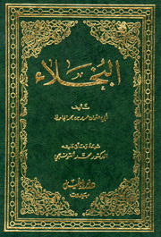

| الكتاب | المؤلف | الحالة | الغلاف | الفكرة العامة | سعر النسخه | اضافة | |
|---|---|---|---|---|---|---|---|
| البيان والتبيين | الجاحظ | متوفر | |
هو كتاب تتمحور مواضيعة حول قدرة التعبير ولأيصال بلادب | 9.99$ | ||
| الأدب الصغير والأدب الكبير | ابن المقفع | غير متوفر | |
تحتوي الكتب عادة على الكثير من الرؤى والمعارف والدروس المهمة، فكلما قرأ الشخص أكثر ازدادت حصيلته المعرفية، واستطاع أن يتعامل مع مواقف الحياة، فليس هناك شيء يفيد العقل كالفائدة التي يحصلها عند قراءة الكتب. | 4.99$ | ||
| البخلاء | الجاحظ | متوفر |  | تحتوي الكتب عادة على الكثير من الرؤى والمعارف والدروس المهمة، فكلما قرأ الشخص أكثر ازدادت حصيلته المعرفية، واستطاع أن يتعامل مع مواقف الحياة، فليس هناك شيء يفيد العقل كالفائدة التي يحصلها عند قراءة الكتب. | 19.99$ | ||
| الأدب الصغير والأدب الكبير | ابن المقفع | غير متوفر | |
تحتوي الكتب عادة على الكثير من الرؤى والمعارف والدروس المهمة، فكلما قرأ الشخص أكثر ازدادت حصيلته المعرفية، واستطاع أن يتعامل مع مواقف الحياة، فليس هناك شيء يفيد العقل كالفائدة التي يحصلها عند قراءة الكتب. | 3.99$ | ||
| الأدب الصغير والأدب الكبير | ابن المقفع | غير متوفر | |
تحتوي الكتب عادة على الكثير من الرؤى والمعارف والدروس المهمة، فكلما قرأ الشخص أكثر ازدادت حصيلته المعرفية، واستطاع أن يتعامل مع مواقف الحياة، فليس هناك شيء يفيد العقل كالفائدة التي يحصلها عند قراءة الكتب. | 6.99$ | ||
| البيان والتبيين | الجاحظ | متوفر | |
تحتوي الكتب عادة على الكثير من الرؤى والمعارف والدروس المهمة، فكلما قرأ الشخص أكثر ازدادت حصيلته المعرفية، واستطاع أن يتعامل مع مواقف الحياة، فليس هناك شيء يفيد العقل كالفائدة التي يحصلها عند قراءة الكتب. | 2.00$ | ||
| البيان والتبيين | الجاحظ | متوفر | |
تحتوي الكتب عادة على الكثير من الرؤى والمعارف والدروس المهمة، فكلما قرأ الشخص أكثر ازدادت حصيلته المعرفية، واستطاع أن يتعامل مع مواقف الحياة، فليس هناك شيء يفيد العقل كالفائدة التي يحصلها عند قراءة الكتب. | 8.99$ | ||
| البيان والتبيين | الجاحظ | متوفر | |
تحتوي الكتب عادة على الكثير من الرؤى والمعارف والدروس المهمة، فكلما قرأ الشخص أكثر ازدادت حصيلته المعرفية، واستطاع أن يتعامل مع مواقف الحياة، فليس هناك شيء يفيد العقل كالفائدة التي يحصلها عند قراءة الكتب. | 1.99$ | ||
| البيان والتبيين | الجاحظ | متوفر | تحتوي الكتب عادة على الكثير من الرؤى والمعارف والدروس المهمة، فكلما قرأ الشخص أكثر ازدادت حصيلته المعرفية، واستطاع أن يتعامل مع مواقف الحياة، فليس هناك شيء يفيد العقل كالفائدة التي يحصلها عند قراءة الكتب. | 3.99$ | |||
| البيان والتبيين | الجاحظ | متوفر | |
تحتوي الكتب عادة على الكثير من الرؤى والمعارف والدروس المهمة، فكلما قرأ الشخص أكثر ازدادت حصيلته المعرفية، واستطاع أن يتعامل مع مواقف الحياة، فليس هناك شيء يفيد العقل كالفائدة التي يحصلها عند قراءة الكتب. | 5.99$ |